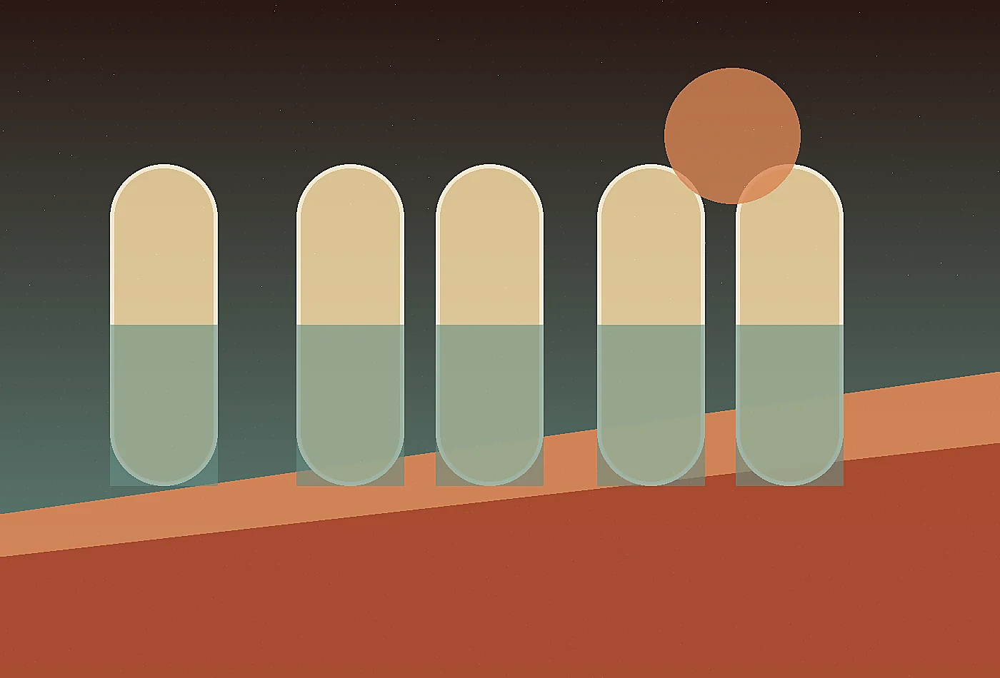
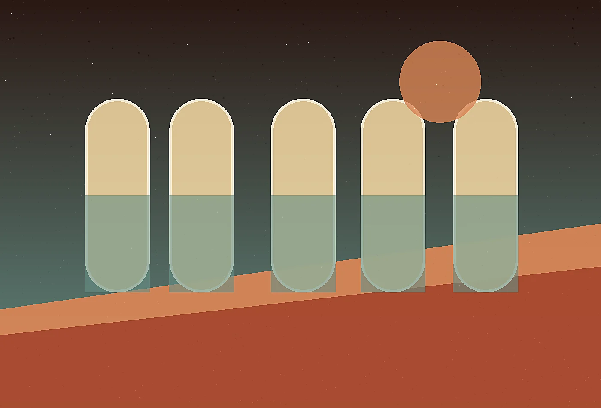

Desert futurist hospitality atelier
Blog at Mirage Loom
Read field essays, practical notes, and sharp perspectives from Mirage Loom. The journal is written for people who prefer useful specificity over generic trend language.
Design the arrivalJournal notes with practical edges
The Mirage Loom journal collects essays for leaders who want clear thinking, fresh language, and grounded examples. Each piece is written to be read by busy people who still care about nuance.

Essay 01A better desert arrival begins before the road turns private
A short operational essay on noticing the point where a polished experience begins to fray, then repairing it with language, timing, and clearer ownership.
Discuss this idea 
Essay 02How shade can become the signature of a hospitality brand
A practical look at how teams can preserve ambition while removing the small confusions that waste energy during important moments.
Discuss this idea 
Essay 03Programming silence without making a retreat feel empty
A field note about translating expert knowledge into cues that guests, athletes, residents, directors, or staff can use immediately.
Discuss this idea
What we are tracking
- Signals that reveal friction before complaints arrive.
- Small rituals that make premium experiences feel human.
- Operational writing that improves trust without adding noise.
- Material choices that carry meaning and survive use.
Receive the field letter
Once each month, we send a concise note with observations, questions, and examples from our work. It is written for decision makers who prefer substance over promotional noise.
Our documents are tactile and operational at the same time. They may describe the feeling of a threshold, the timing of a tea service, the sourcing logic for a blanket, and the maintenance implication of a shaded path on the same page. That blend helps owners protect the emotional promise while making grounded decisions.
We pay close attention to maintenance because remote beauty can become fragile when daily work is ignored. The same concept system that describes guest emotion also names storage needs, cleaning rhythms, replacement materials, staff language, and seasonal adjustments, giving the retreat a better chance to remain graceful under real use.